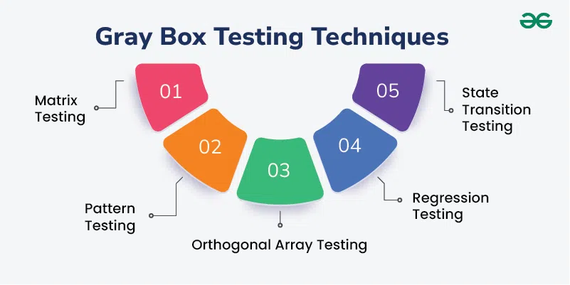

STQA
Black Box Testing

Black-box testing is a type of software testing in which the tester is not concerned with the software’s internal knowledge or implementation details but rather focuses on validating the functionality based on the provided specifications or requirements.
Advantages:
- Can be used for testing complex systems with unknown internal structures
- Less time-consuming and resource-intensive compared to White Box Testing
- Suitable for testing systems with changing or proprietary internal implementations
Disadvantages:
- May not identify internal errors or defects
- Requires thorough understanding of the system’s specifications and requirements
- May not be effective for testing systems with complex logic or algorithms
Types of Black Box Testing
- Functional Testing
- The test engineer will check all the components systematically against requirement specifications is known as functional testing. Functional testing is also known as Component testing.
- Types of Functional Testing
- Unit Testing
- Integration Testing
- System Testing
- Non-function Testing
- It provides detailed information on software product performance and used technologies. Non-functional testing will help us minimize the risk of production and related costs of the software.
- Types of Non-functional Testing
- Performance Testing
- Usability Testing
- Compatibility Testing
White Box Testing
White box testing is a software testing technique that involves testing the internal structure and workings of a software application .
The tester has access to the source code and uses this knowledge to design test cases that can verify the correctness of the software at the code level.
White box testing is also known as structural testing or code-based testing, and it is used to test the software’s internal logic, flow, and structure.

Types Of White Box Testing
- Unit Testing
- Checks if each part or function of the application works correctly.
- Ensures the application meets design requirements during development.
- Integration Testing
- Examines how different parts of the application work together.
- Done after unit testing to make sure components work well both alone and together.
- Regression Testing
- Verifies that changes or updates don’t break existing functionality.
- Ensures the application still passes all existing tests after updates.
Gray Box Testing

Greybox testing is a software testing method to test the software application with partial knowledge of the internal working structure.
It is a combination of black box and white box testing because it involves access to internal coding to design test cases as white box testing and testing practices are done at functionality level as black box testing.
Grey Box Testing Techniques

- Matrix Testing: Identifies and removes unused/uninitialized variables to improve readability and speed.
- Regression Testing: Ensures modifications don't introduce new defects.
- Orthogonal Array Testing (OAT): Covers maximum code with minimal test cases.
- Pattern Testing: Identifies and fixes recurring defects in similar software.
- Grey Box Testing Tools: Pattern testing is applicable to such type of software that is developed by following the same pattern of previous software.
Mutation Testing

Mutation testing, also known as code mutation testing, is a form of white box testing in which testers change specific components of an application's source code to ensure a software test suite can detect the changes.
Changes introduced to the software are intended to cause errors in the program.
Mutation testing is designed to ensure the quality of a software testing tool, not the applications it analyzes.
Types of mutation testing
- Statement mutation. Statements are deleted or replaced with a different statement. For example, the statement "A=10 by B=5" is replaced with "A=5 by B=15."
- Value mutation. Values are changed to find errors. For example, "A= 15" is changed to "A= 10" or "A=25."
- Decision mutation. Arithmetic or logical operators are changed to detect errors. For example, "(A
Advantages:
- Helps to ensure the identification of weak tests or code.
- Offers a high level of error detection.
- Increases the use of object-oriented frameworks and unit tests if an organization uses them.
- Offers more mutation testing tools due to the increased frameworks and unit tests.
- Helps organizations determine the usefulness of their testing tool through the use of scoring.
Disadvantages:
- Isn't practical without the use of an automation tool.
- Can be time-consuming and costly due to the large number of mutants being tested.
Mutation testing tools
- Insure++.
- Jester for JUnit.
- PIT for Java and the Java Virtual Machine.
- MuClipse for Eclipse.
Black Box vs. White Box vs. Grey Box Testing
| Feature | Black Box Testing | White Box Testing | Grey Box Testing |
|---|---|---|---|
| Focus | External behavior, user perspective. | Internal structure, code. | Combination of both. |
| Knowledge | No knowledge of internal code. | Detailed knowledge of internal code. | Limited knowledge of internal code. |
| Testing Approach | Input-output relationship. | Code analysis, branch coverage. | Input-output relationship with some code analysis. |
| Common Techniques | Equivalence partitioning, boundary value analysis, decision table testing. | Control flow analysis, data flow analysis, statement coverage. | Matrix testing, regression testing, orthogonal array testing. |
| Advantages | Independent of implementation, suitable for large systems. | Thorough code coverage, early defect detection. | Combines strengths of both, cost-effective. |
| Disadvantages | Limited code coverage, potential for missed defects. | Time-consuming, requires technical expertise. | May not be as thorough as white box, requires some knowledge of code. |
| Typical Use Cases | Functional testing, acceptance testing. | Unit testing, integration testing. | System testing, regression testing. |
Acceptance Testing

Acceptance testing is a quality assurance (QA) process that determines to what degree an application meets end users' approval.
Depending on the organization, acceptance testing might take the form of beta testing, application testing, field testing or end-user testing.
A QA team conducts acceptance tests to ensure the software or app matches business requirements and end-user needs.
An acceptance test returns either a pass or fail result. A fail suggests that there is a flaw present, and the software should not go into production.
Acceptance testing process
Acceptance testing occurs after system tests, but before deployment.
A QA team writes acceptance tests and sets them up to examine how the software acts in a simulated production environment.
Acceptance testing confirms the software's stability and checks for flaws.
Acceptance testing includes the following phases: plan, test, record, compare and result.
| Feature | Acceptance Testing | System Testing |
|---|---|---|
| Purpose | User acceptance, deployment readiness. | System functionality, requirements. |
| Scope | End-user focus. | Entire system. |
| Performed by | End users. | Testing team. |
| Criteria | User acceptance criteria. | Functional/non-functional requirements. |
| Focus | User experience, business value. | Correctness, completeness, performance. |
| Timing | End of development. | Throughout development. |
| Techniques | User scenarios, use cases. | Black-box, white-box, gray-box. |
| Tools | Acceptance testing tools. | Testing tools. |
Regression Testing

Regression Testing is a type of testing in the software development cycle that runs after every change to ensure that the change introduces no unintended breaks.
Regression testing addresses a common issue that developers face — the emergence of old bugs with the introduction of new changes.
Typically, it involves writing a test for a known bug and re-running this test after every change to the code base. This aims to immediately identify any change that reintroduces a bug.
Example:
Consider an example where a software development company is working on releasing a new product for video editing. The primary requirement is to release their first build with only the core features. Before product release, a regression test is conducted with 1000 test cases to ensure the basic or freemium editing functionalities. Your initial build is ready to hit the market if it passes the tests successfully.
However, with the success of your first product making waves in the video editing landscape, your business team comes back with a requirement to add a few new premium features. Your product team develops those and adds them to the existing app, but with the addition of new codes, a regression test is required again. Hence, you write 100 new test cases to verify the functionality of those new features. However, you will have to run those 1000 old test cases already conducted to ensure essential functions haven’t been broken.
Regression Testing Tools and Frameworks
- Selenium: Selenium Browser Automation helps run tests on different browsers and find bugs.
- Cypress: You can perform E2E Testing and Components Testing on Cypress.
- Appium: It is used to run regression tests on iOS and Android apps.
- Playwright: Playwright is used for running regression tests for web applications on different browsers.
- Puppeteer: You can use Puppeteer to run regression tests for web applications and check its functionality on different browsers.
- BrowserStack Automate: It enables you to run regression tests for your web app on 3000+ real devices and browsers under real user conditions.
- BrowserStack App Automate: It helps you run tests on real Android and iOS devices for better accuracy.
Challenges in Regression Testing
- Time and Cost Requirements
We have seen that regression testing is incremental — the number of tests changes with each new feature that is added. It involves running older tests with every change. Thus, these tests can take significant time to complete.
- Complexity
When a project grows, not only does the number of tests increase, but the complexity too. In the shopping cart example above, the testing of the cart is logically done only after creating a new user and browsing a search page.
- Regular Maintenance
To manage the time and complexity of regression testing, one needs to make sure that proper maintenance is done.
For example, if a design change mandates the movement of the shopping cart to the right menu — how does that affect the existing regression tests?
Though the change may only involve minor changes to the front end, the tests would need to be redesigned completely.
Regression Testing Techniques

Unit Regression Testing:
This is a simple method in which the tester has a list of items to test every time a change occurs. This is the best way to start regression testing in an existing project.
In this, we are going to test only the changed unit, not the impact area, because it may affect the components of the same module.
Example:
In the below application, and in the first build, the developer develops the Search button that accepts 1-15 characters. Then the test engineer tests the Search button with the help of the test case design technique.

Now, the client does some modification in the requirement and also requests that the Search button can accept the 1-35 characters. The test engineer will test only the Search button to verify that it takes 1-35 characters and does not check any further feature of the first build.
Partial Regression Testing
Approach divides the project into logical, coherent units that work together to form the whole application. Select the units that are most critical to the application and define specific test cases for them while performing unit regression testing for the rest of the modules.
It is also called the Regional Regression testing.
Example
In the below image as we can see that we have four different modules, such as Module A, Module B, Module C, and Module D, which are provided by the developers for the testing during the first build. Now, the test engineer will identify the bugs in Module D. The bug report is sent to the developers, and the development team fixes those defects and sends the second build.

Full Regression Testing
It which is the most detailed form of regression testing. In this case, one takes a comprehensive view of the codebase to identify all functionalities that would affect usability on breaking and write detailed tests for each of them.
This technique is time-consuming but highly beneficial if applied from the early stages of project development.

Testing Techniques

Types Of Software Testing Techniques
There are two main categories of software testing techniques:
- Static Testing Techniques are testing techniques that are used to find defects in an application under test without executing the code. Static Testing is done to avoid errors at an early stage of the development cycle thus reducing the cost of fixing them.
- Dynamic Testing Techniques are testing techniques that are used to test the dynamic behaviour of the application under test, that is by the execution of the code base.  The main purpose of dynamic testing is to test the application with dynamic inputs- some of which may be allowed as per requirement (Positive testing) and some are not allowed (Negative Testing).